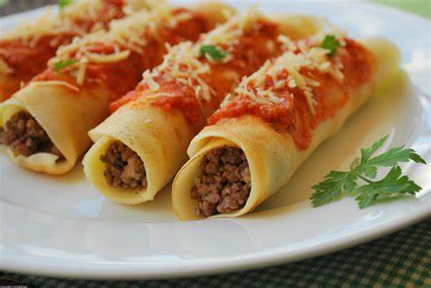

Quem não gosta de um pão quentinho que acabou de sair do forno no café da manhã, não é mesmo? Preparar pão caseiro simples e fofinho é fácil: a receita é feita no liquidificador com 7 ingredientes.
É importante deixar a massa descansar para dobrar de volume e deixar a massa bem macia. É uma sugestão que combina com um cafezinho. Confira o passo a passo completo e saiba como fazer pão caseiro!
ingredientes:
50 gramas de fermento biológico fresco
2 xícaras e meia de água morna
2 colheres de sopa de açúcar
1 xícara de óleo
1 colher de chá de sal
1 ovo
1 quilo de farinha de trigo
Como preparar
Em um recipiente, coloque 50 gramas de fermento biológico fresco e 2 xícaras e meia xícara de água morna. Misture para dissolver e reserve.
No liquidificador, coloque 2 colheres de sopa de açúcar, 1 xícara de óleo, 1 colher de chá de sal, 1 ovo e a água com fermento reservada. Bata por 2 minutos.
Transfira a mistura para uma tigela e adicione 1 quilo de farinha de trigo, aos poucos, e misture até o ponto de desgrudar das mãos. Cubra com um pano e deixe descansar por 1 hora.
Polvilhe uma bancada com farinha de trigo e abra a massa. Enrole, modele o pão da forma que preferir e coloque em uma assadeira. Espere crescer por 40 minutos.
Leve para assar em forno preaquecido a 200 graus Celsius por 30 minutos.
Panqueca

ingredientes:
Massa:
1 xícara de chá de trigo
1 xícara de chá de amido de milho
2 xícaras de leite
2 ovos
Recheio
Molho de tomate
mussarela
orégano e queijo ralado
Como preparar
Bata todos os ingredientes da massa no liquidificador por cinco minutos
Feito isso, encha de massa uma concha de feijão e frite em uma frigideira untada com óleo.
Após fritar as panquecas, adicione o recheio de sua preferência.
Enrole e ponha-as em uma forma.
Adicione a mussarela, o molho de tomate, o orégano e o queijo ralado
Deixe assar no forno em temperatura média de 220 graus por 10 a 20 minutos.


.png)